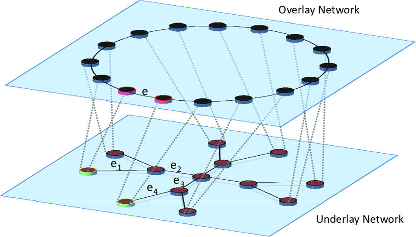

Section III: Distributed Systems Fundamentals · Lesson 02-DS
Peer-to-Peer Design
From P2P Models to P2P Design
In our last lesson, we saw the high-level P2P architectures:
- Hybrid (Napster): A central server for finding peers, but direct P2P for transfer.
- Gossip (Gnutella 0.4): A chaotic “flooding” model that scaled poorly.
- Supernode (Gnutella 0.6):
- “Smart” gossip model where powerful Full Nodes serve weaker Light clients.
- Blockchains use this model.
But this raises the real engineering questions:
- How does a peer gossip? How does it find other peers to talk to?
- How do you build an “address book” for a P2P network without a central server?
- What happens when peers constantly join and leave?
In this lesson, we dive into the “plumbing” of P2P by exploring the two main types of overlay networks and the critical security problems they face.
What is an “Overlay Network?”
- Overlay Network
-
A logical map built on top of the physical internet. It’s the “rules of the road” that peers use to find each other and share data, without a central server.

Unstructured Overlay Networks
- What it is: A random mesh of peer connections.
- Analogy: Shouting in a crowded room.
- How it finds things: A peer floods a query to all neighbors, and each neighbor forwards it again.
- Why it works: It is simple and resilient under churn.
- Why it hurts: It creates duplicates, wasted traffic, and broadcast storms.
Numbers show how many copies each peer receives. Flooding keeps going until every peer that learns the message has forwarded it, so outer peers are effectively in a race to rebroadcast first.
Structured Overlay Networks
- What it is: A deliberately organized overlay for exact lookups.
- Analogy: A postal system moving a letter toward the right ZIP code.
- How it works in practice:
- The sender knows an entry point, not the full route.
- The first office does not know the final street address, but it does know which regional hub gets the letter closer.
- Each step forwards to the best closer destination it knows
- Why it works: The network does not flood. It narrows the search with each hop.
The sender does not know how to get to the final destination. Each intermediary just forwards the message to the closest next destination it knows.
When to Use Which?
The two P2P designs (Unstructured and Structured) are tools for different jobs. Choosing the right one depends on what you need to do.
Unstructured (like “Gossip”)
- Best For: Broadcasting new information to everyone as quickly as possible.
- Trade-off: Very “noisy” and inefficient for finding specific data.
Structured (like an “Address Book”)
- Best For: Efficiently finding one specific piece of data in a massive network.
- Trade-off: More complex to build and maintain. Only good for “exact-match” searches (you need the hash/ID).
Scalability Challenges
Why P2P Networks Get Clogged
Unstructured (Flooding)
- The Cost: When you “flood” a query, the number of messages grows with the size of the network.
- The Math: The best-case cost is (linear cost). If the network () doubles in size, query traffic doubles.
- The Result: The network quickly gets overwhelmed by “broadcast storms” and grinds to a halt. This is what happened to Gnutella.
- The Fix: Create a “Supernode” hierarchy. This concentrates the traffic on a backbone of powerful peers, which is what Gnutella 0.6 did.
Structured (Distributed Hash Table)
- The Cost: When you route a query in a DHT, you “jump” across the network, halving the distance each time.
- The Math: The cost is (logarithmic cost). If the network doubles, you only add one extra hop.
- The Result: The network can grow to millions of peers, and you can still find any file in just a few (e.g., 20-30) hops.
- The Catch: This amazing efficiency only works if the “address book” is maintained.
DHT Example: Chord
1. The Big Idea: “The Clock”
- All peers (nodes) and all files (data) get a unique ID from a hash function.
- These IDs are arranged in a circle, like the numbers on a clock.
- The Rule: A piece of data (a key) is stored at its “successor”: the very next peer it encounters on the clock.
- Example: A file with ID
50would be stored on the first peer with an ID greater than 50 (e.g.,Node 55).
2. The Problem: The Slow Walk
- If you are
Node 1and need file50, you could just “walk around the clock” asking every peer… but that would be incredibly slow on a network with millions of peers.
3. The Solution: “Shortcuts”
Chord gives each peer a “finger table,” which is just a list of shortcuts to peers on the other side of the clock.
Instead of walking, you “jump” across the clock, getting closer with each hop.
This “jump” method lets you find any peer in a massive network in just a few hops.
The big idea is to organize the entire network into a logical ring, like a clock.
Chord - Example
Node 8 Finger Table
| Node | IP Address |
|---|---|
Node 12 |
10.0.0.12 |
Node 17 |
10.0.0.17 |
Node 24 |
10.0.0.24 |
Node 42 |
10.0.0.42 |
Node 42 Finger Table
| Node | IP Address |
|---|---|
Node 51 |
10.0.0.51 |
Node 51 |
10.0.0.51 |
Node 56 |
10.0.0.56 |
Node 8 |
10.0.0.8 |
Node 51 Finger Table
| Node | IP Address |
|---|---|
Node 56 |
10.0.0.56 |
Node 56 |
10.0.0.56 |
Node 8 |
10.0.0.8 |
Node 12 |
10.0.0.12 |
Lookup result: File 54 is stored at successor Node 56.
DHT Example: CAN
CAN (Content-Addressable Network) is another “structured overlay” design. Instead of a circle, it uses a logical map or grid.
- The entire network is a “virtual coordinate space,” like a 2D map.
- Each grid square is a node-owned zone.
- First hex digit chooses the row:
0-7or8-F. - Second hex digit chooses the column:
0-3,4-7,8-B,C-F.
The Routing: “Greedy Walk”
- You forward the query to the neighboring zone that is geometrically closest to the target.
- Start at node
N1and find fileD4
DHT Example: Pastry
Pastry is a third “structured overlay” design. It routes queries by matching the target’s ID one digit at a time, like looking up a phone number.
The Big Idea: “The Phone Number”
- Every peer and file gets a long, unique ID, like
1A2B. - Each peer maintains a “routing table” of peers that share a prefix of its own ID.
- Row 1: Peers that start with
1... - Row 2: Peers that start with
1A... - Row 3: Peers that start with
1A2...
- Row 1: Peers that start with
- It also keeps a “leaf set” of peers with the numerically closest IDs (its immediate neighbors).
Pastry Lookup Example
- Target key:
1A2 - Start node:
16B - The route improves the shared prefix one step at a time:
16B -> 1C4matches the first digit11C4 -> 1A7matches the prefix1A1A7 -> 1A2reaches the responsible neighborhood
- The leaf set is what turns “close enough” into the exact final destination
Routing table at 16B |
next hop |
|---|---|
prefix 1... |
1C4 |
prefix 2... |
2F1 |
prefix A... |
A90 |
Routing table at 1C4 |
next hop |
|---|---|
prefix 1A. |
1A7 |
prefix 1B. |
1B9 |
prefix 1F. |
1F2 |
Leaf set at 1A7 |
peers |
|---|---|
| lower IDs | 196, 19F |
| higher IDs | 1A2, 1AD |
The Blockchain Link: Efficient Routing
- Pastry (and its relatives like Tapestry and Kademlia) are widely used in decentralized systems that support blockchains.
- Decentralized Storage (IPFS): The lookup system used by IPFS (which stores NFT data) is heavily inspired by Kademlia, which uses a similar prefix-matching logic.
- Ethereum’s P2P Layer: The node discovery protocol in Ethereum (Discovery v5) is also based on Kademlia.
This “prefix-matching” design is extremely fast and resilient, making it a popular choice for building the “address book” for decentralized applications.
Membership and “Churn”
All P2P networks face a “fundamental property”: peers are not reliable. They constantly join, leave, and crash. This is called churn.
The Problem of “Churn”
What does churn break?
In Unstructured Networks (Gossip):
- Your neighbors disappear, potentially “partitioning” you from the main network.
- You need a way to find new, healthy peers.
In Structured Networks (DHTs):
- Lost Files: If
Node 55(storing file50) suddenly leaves, file50is now gone. - Broken “Clock”: The link between
Node 45andNode 55is broken. - Broken “Shortcuts”: Every peer’s “shortcut” pointing to
Node 55is now pointing at an empty space.
- Lost Files: If
The “Self-Healing” Solutions
Peers are constantly running maintenance tasks in the background:
- Join: A new peer contacts any known node, finds its correct spot on the “clock,” and “splices itself in.”
- Stabilize: Peers constantly ping their immediate neighbors to find new peers or notice when one has left.
- Fix Fingers: Peers periodically check their “shortcuts” to see if they’re still valid and update them if they’re broken.
- Replicate: To prevent data loss,
File 50isn’t just onNode 55; it’s also copied to the next few peers (e.g.,Node 60,Node 65).
Partitions & Healing
All P2P networks can break. A “network partition” is when the network splits into two or more “islands” that can’t talk to each other.
How Networks Break
- Massive Churn: So many peers leave at once (like a mass power outage) that the “self-healing” tasks can’t keep up.
- Routing Bias: A flaw in the code that causes all peers in, say, Europe, to only connect to other European peers, “orphaning” them from North America.
- Attack: An attacker could intentionally partition the network (this is a key part of an “Eclipse Attack,” which we’ll see next).
The P2P Playbook: Surviving Churn
To survive in the real world, P2P networks combine redundancy with maintenance, but they do it in different ways.
Structured (DHT)
- Replication: Copy important data to successor neighbors so one departure does not erase the file immediately.
- Constant checks: Run
stabilize()andfix_fingers()to repair broken successor links and shortcuts. - Goal: Preserve the logical shape of the overlay so routing stays correct.
Unstructured (Gossip)
- Redundancy: Keep several neighbors so one departure does not isolate a peer immediately.
- Gossip membership: Exchange small peer-list samples to keep contacts fresh.
- Goal: Stay well connected and well mixed, even though no precise shape is maintained.
Micro Lab: Flood vs. DHT Routing
The Blockchain Link
Partitions are a “Code Red”
- For a file-sharing network, a partition is an inconvenience (you can’t find some files).
- For a blockchain, a partition is a catastrophic security failure.
- If the network splits into “USA” and “Europe,” each “island” will keep growing.
- This creates two different “true” blockchains (a “fork”).
- An attacker could spend money on the “USA” chain and then re-join the “Europe” chain to “erase” that transaction.
- This is why blockchain P2P protocols are obsessed with staying connected. They are designed to be “partition-resistant” above all else.
The Great P2P Weakness: Sybil & Eclipse Attacks
These P2P networks have a fatal security flaw. We’ve assumed peers are honest. What if they’re not?
The Sybil Attack
- The Attack: An attacker creates millions of fake peers (fake identities) on their one computer.
- The Problem: In a P2P network, “identity is free”. There is no central authority to stop this.
- The Impact:
- The attacker can “out-vote” honest peers in a consensus system.
- They can surround a victim, leading to an Eclipse Attack.
The Eclipse Attack
- The Attack: An attacker uses their millions of Sybil peers to surround a victim.
- The Problem: The victim’s “neighbor list” is filled only with the attacker’s fake nodes.
- The Impact: The victim is “eclipsed” from the real network.
- The attacker now controls everything the victim sees and hears.
- They can feed the victim a fake blockchain.
- They can censor the victim’s transactions.
Check-on-Learning & Bridge to P2P Trust
Let’s review the core P2P concepts before we move on.
- Q1: Why is a structured DHT (like Chord) faster for lookups than an unstructured “flood” (like Gnutella 0.4)?
- A: A DHT provides efficient, routing (like a card catalog). Flooding is (checking every shelf in the library).
- Q2: What is “churn,” and how do networks “heal” from it?
- A: Churn is the constant joining and leaving of peers. Structured networks “heal” with constant maintenance (like
stabilize()). Unstructured networks “heal” by gossiping peer lists (likeCYCLON).
- Q3: If identities are free, what stops an attacker from creating a million “Sybil” peers to surround and “Eclipse” a victim?
- A: In a basic P2P network, nothing. This is the fundamental vulnerability. This is the problem that , famously, Proof-of-Work is designed to solve.